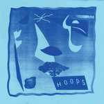
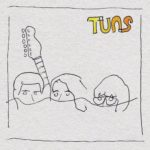

Quick Takes (August 2016)
It's been a rather emotional beginning of September for those who are wholly enraptured with Nick Cave's chilling Skeleton Tree. But if you've been looking for some music to decompress with, then the past month featured some rather great offerings.
My top choice for the month goes to the singular Katie Dey, who's experimental folk had be both bewildered and fascinated, while Carl was more than happy to endorse another winning effort from Wild Beasts. Other highlights include the ever-reliable Cass McCombs, and Carl also had very nice things to say about De La Soul's comeback record.
What were your favorite albums during the month of August? Anything we didn't get to review on our site that we should've? You can always reach us on facebook, or on our official twitter page. - Juan
...
 Cass McCombs
Cass McCombs
Mangy Love
(ANTI-)
Cass McCombs isn’t one to shy away from tackling the testiest of subjects, though you’d never realize it if you’d simply enjoy his songwriting acumen. For a moment, it seemed as if McCombs was releasing too much and too often; most of his latter day recordings can be stocked into mounds of unfleshed ideas with the occasional moments of brilliance. Mangy Love, his eighth full-length release, is one of his focused endeavors since his remarkably bleak Wit’s End. A songwriter who’s always been wise beyond his years, McCombs takes on the stark disarray of our times with a series of sociopolitical issues ranging from the ambivalence of everyday prejudice to the rampant sexism that continues to occur among women. Instead of letting these dour topics dictate the overall course of Mangy Love, McCombs counters it with a groove-oriented backbone, minding the disparate musical stylings, to underline their 70s singer-songwriter bona fides. McCombs doesn't have any qualms when it comes to exposing his almost out-of-touch smoothness, and in a way that squareness emphasizes his sincerity even more. The creative zeal McCombs displays on Mangy Love, and his willingness to take some chances, even if low stakes, engages both the heart and the mind. [8/10] Juan Edgardo Rodríguez
 Crystal Castles
Crystal Castles
Amnesty (I)
(Casablanca Records)
How much could the imminent change of a band member disrupt the entire constitution of an otherwise accomplished project? Well, it depends. Regardless of who holds the most songwriting credits between original members Alice Glass and Ethan Kath, it appears as if their increasingly corrosive relationship made for a compelling three album run. Glass’s confrontational and socially-minded topics were the right fit for Kath’s clamorous dance arrangements. But what do you get when you strip Glass out of the equation? A competent Crystal Castles record without the message, and competent is a bit of a stretch considering Kath is trying to step into the zeitgeist with the sort of electronic styles they would’ve otherwise dismissed. New vocalist Edith Francis deliberately steps away from Glass, and all the better for it: she’s less thorny in her delivery, holding us closer with a cold embrace that comes across as unsettling. Sometimes, Kath will try to replicate the past with a house-oriented number like Frail, where Francis tries her best to replicate Glass’s contagious shrieking but without the same stage presence. In spite of this, Amnesty (I) isn’t afraid of glossing over its faults in hopes of trying out new things. And really, that’s the more sensible approach in view of the hard task at hand. [5/10] Juan Edgardo Rodríguez
 De La Soul
De La Soul
and the Anonymous Nobody...
(AOI)
De La Soul’s first album in twelve years comes at a time where a new age of rappers are threatening to make the scene as good as it’s been in a very long time. While Kendrick Lamar, Anderson .Paak, Chance the Rapper et al. are making great albums in 2016, Pos, Dave and Maseo jaunt back into the limelight with a record part crowdfunded. The Kickstarter cash has been splashed, with a stellar and rangy list of collaborators and guests – Usher, Damon Albarn and Little Dragon to name but a few – and the results are often excellent and at times underwhelming. Not many rap acts do an old-school hip-hop beat, a heavy bassline and over-spilling rapping with as much brilliance as De La Soul, and in the case of and the Anonymous Nobody..., its strongest moments (Royalty Capes, Nosed Up) occur when these boxes are ticked. It’s a good comeback for De La Soul, and there’s plenty to really enjoy here, but there are too many occasions where tracks loiter for too long, not outstaying their welcome as such, just not doing a great deal with it. [6/10] Carl Purvis
 Katie Dey
Katie Dey
Flood Network
(Joy Void)
Katie Dey is a bedroom recorder who emphasizes loquacious pitch-shifting methods to give her otherwise sparse compositions a feeling of alienation and disposition. But at its true core, the Melbourne songwriter writes fragments of songs that follow a folk persuasion. Her first full-length, Flood Network, is hopscotched around two moods: hypnotic ambient interludes that are interspersed with quasi-conventional arrangements that are cryptically clever. Through its varying experiments, Dey strums her guitar with elegant poise even when the universe that she’s surrounded by is falling apart. It’s all compounded by her shrill, trebly vocals, another polarizing aspect that she recurrently modifies whilst barely containing an undercurrent of solemnity. But as it reaches into a climactic finish, you can hear how Dey is taking flight into some transcendent realm. Flood Network as a whole is spellbinding even when it’s faintly outlandish, marked with a fraught identity that shrouds her creative audacity. [8/10] Juan Edgardo Rodríguez
 Factory Floor
Factory Floor
25 25
(DFA)
Factory Floor have an ability to write dance songs that are impossibly hard to dance to. Like their label mates LCD Soundsystem, they try to encompass a whole gamut of electronic sounds, past and present, with their thinking caps held on tight. That makes for a collection of songs that are designed with great clinical precision, and even if there’s no set direction to take at least they keep their glitched-out sonic constructions consistently offbeat. Aside from a few reedy, esoteric vocal tricks, the duo emphasize repetition while putting forth a well-seasoned, yet awkward groove. Though the overall construct between their self-titled and their latest, 25 25, is uncanny (especially in the way the songs hardly deviate from a steady course) it also highlights their indulgences even further. The willful use of nagging repetition comes across as amateurish rather than clever, as if the duo found any excuse to keep things shallow to compensate for the lack of ingenuity. Continually tedious and far too long for its own good, 25 25 is a almost hour-long endurance test that refuses to let itself out of the duo’s own heads. [4/10] Juan Edgardo Rodríguez
Hoops
Hoops EP
(Fat Possum)
It’s often hard to really, really like a jangly guitar band in 2016, simply because there’s not an awful lot of complexity or facets of the sound to become immersed in. In order for one of them to really become invested in, they have to be extremely good at executing the sound and everything that comes with its scape. The signs are excellent for Hoops, who with a sixteen-minute EP have managed to create a handsome, hazy panorama with its lines blurred by an optimal dose of psychedelica. One of the better albums in the genre in recent years was Real Estate’s Atlas, and it’s hard to listen to Hoops’ EP without making a connection. Atlas is much more clinical and incisive in its clarity, but the hazier tinges to the melodic guitar riffs give the EP’s sound an identity of its own while Drew Auschermann’s paper-thin vocals blur the lines of the soundscape even further. It will be interesting to see if Hoops can maintain the strength of their sound with in the future with an LP, but the tools are certainly there for that to be the case. [7/10] Carl Purvis
 Of Montreal
Of Montreal
Innocence Reaches
(Polyvinyl)
For the past twenty years, Kevin Barnes has been constantly changing his act with a fearless prolific streak. That makes for a fascinating body of work that rewards with further study, though lately it seemed as if he’d been cozying up to a psychedelic pop sound in a classic rock vein with gradual diminishing returns. So it’s heartening to hear that Barnes again has an itch to change things up considerably with Innocence Reaches, where he revisits his usual glam pop shtick whilst introducing some playful, dance-oriented pop with an anachronistic approach. Barnes has long cultivated his very own idiosyncratic flair, so it’s not the type of reinvention that will alienate his core audience. He allows himself to gloriously fail on sparse disco homages like Ambassador Bridge, though a track like It’s Different for Girls is a bouncy, fun-filled affair that could instantly give more color to any posh dance party. His fey Bowie-isms are still intact, so some things will never change. Challenging and proudly disjointed, Innocence Reaches showcases a deranged songwriter whose fickle character knows no bounds. [6/10] Juan Edgardo Rodríguez
 The Parrots
The Parrots
Los Niños Sin Miedo
(Heavenly Recordings)
If two of Spain’s most recent musical exports are anything to go by, Madrid is firmly tuned into garage-rock. Last year, The Parrots frontman Diego Garcia produced Leave Me Alone, Hinds’ delightfully charming debut which dropped in January, so spotlessly clean production is not something that was ever going to be found with Los Niños Sin Miedo (which fittingly translates to ‘Children Without Fear’). In a very similar manner to Leave Me Alone, the unpolished, gutsy rawness of the record is what gives Los Niños Sin Miedo its irresistible charm. Admittedly, it sounds firmly entrenched in the late sixties with no desire to uproot itself from that time frame, and as a consequence sounds prodigal for large parts, but there is no doubting that this is an enjoyable record. The songs are short and the album weighs in at less than thirty minutes, not allowing any of its embers the time to burn out. It does have some darker moments, but this is a record that is fun, invigorating and ultimately very catchy. [7/10] Carl Purvis
TUNS
TUNS
(Royal Mountain)
The term ‘supergroup’ can be met with eager anticipation or revulsion depending on your standpoint, but TUNS have managed to do something that not many supergroups ever really manage: they’ve released music that sounds similar to that of the bands they’re comprised of. The result? Fans of Sloan, The Inbreds and The Super Friendz should enjoy TUNS regardless of their own taste spectrums. Their jangly, angsty indie-rock is tinged with the nostalgic aspects of its 90s heyday, with the band using the simplicity of their style to their advantage. They stray into Beatles territory with the likes of Look Who’s Back in Town Again, or Manic Street Preachers territory with Throw It All Away, with the sharpness of their songs maintaining a buoyant energy throughout. The nine tracks on this record are nimble, charismatic, and ultimately make for an enjoyable if unspectacular listen. [6/10] Carl Purvis
 Wild Beasts
Wild Beasts
Boy King
(Domino)
Wild Beasts are without doubt one of British music’s most valuable commodities, and five albums in, the Cumbria-via-Leeds four-piece are finally living up to their name in a literal sense. In the eight years since their debut LP, their back catalogue has developed into a supremely strong collection, morphing from quirky, artful pop of Limbo, Panto to the visceral pristine of Present Tense without every really being particularly wild or beastly. Boy King is precisely that. Its songs churn out their most muscular grooves yet, leaving a trail of testosterone in their wake. The antagonising funk and filthy blues of Tough Guy is sardonically contemptuous. Get My Bang slithers along an electronic path with a delicious arrogance. Hayden Thorpe’s falsetto has always been incisive and red-blooded, but when juxtaposed with these haughtier soundscapes, it becomes an entirely different animal. Boy King lends further weight to the view that Wild Beasts are one of the best bands operating in Britain today, and it’s not shy in doing so. [8/10 – Believe The Hype] Carl Purvis
13 September, 2016 - 04:04 — No Ripcord Staff